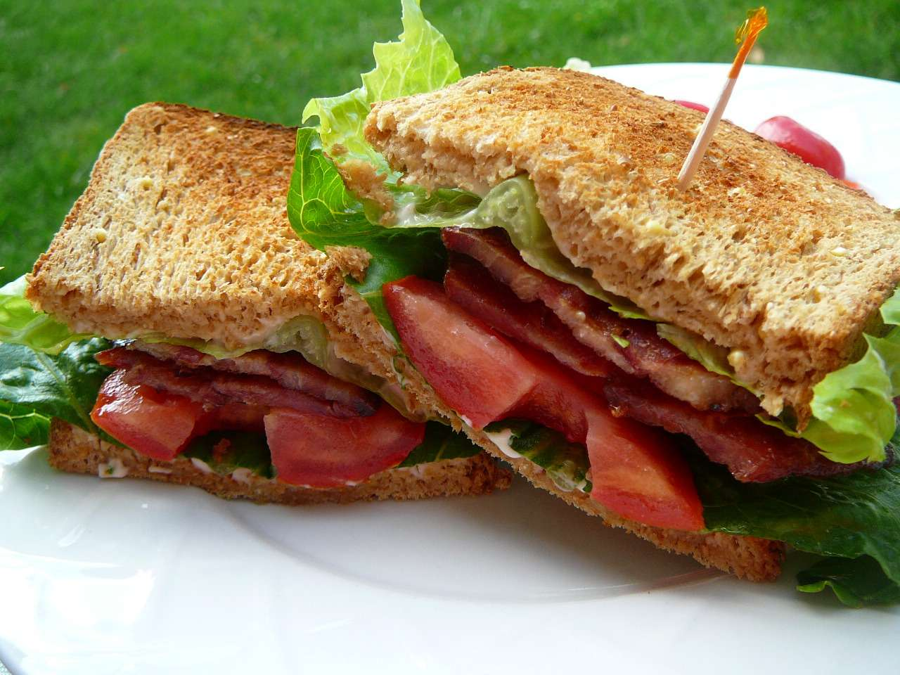

BLT Sandwich

Description
This BLT is classic: bacon, lettuce, and tomato — nothing fancy, just delicious. (I use fake vegetarian bacon these days, and it's still really good!)
Ingeredients
- 4 slices bacon
- 2 leaves lettuce
- 2 slices tomato
- 2 slices bread, toasted
- 1 tablespoon mayonnaise
Steps
- Cook bacon in a large, deep skillet over medium-high heat until evenly browned, about 10 minutes. Drain bacon on a paper towel-lined plate.
- Arrange cooked bacon, lettuce, and tomato slices on one slice of bread. Spread mayonnaise on the other slice of bread. Close to make a sandwich.